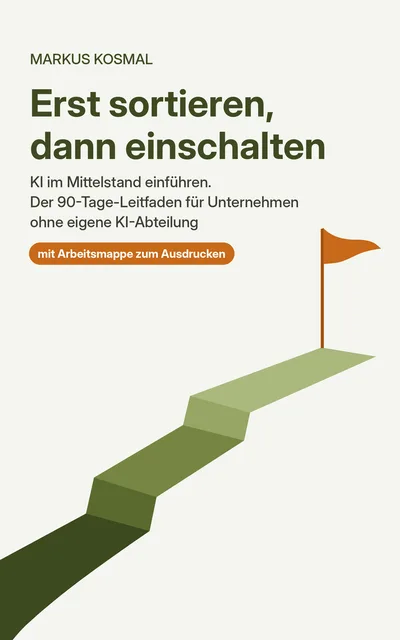
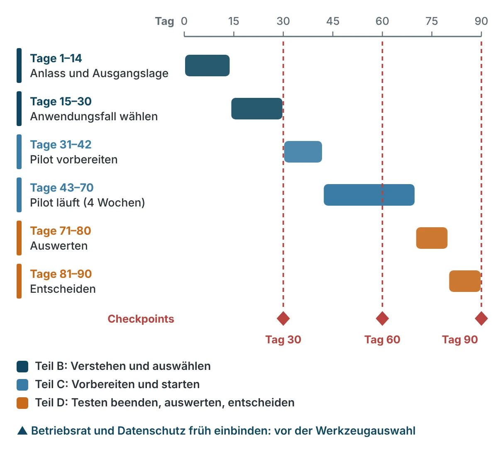

Book · in GermanBuch · erscheint am 19. Januar 2027Livro · em alemão
Erst sortieren, dann einschaltenErst sortieren, dann einschaltenErst sortieren, dann einschalten
KI im Mittelstand einführen. Der 90-Tage-Leitfaden für Unternehmen ohne eigene KI-Abteilung
Introducing AI in mid-sized companies. The 90-day guide for companies without an AI department.
Introduzir IA nas PME. O guia de 90 dias para empresas sem departamento de IA.
Erst sortieren, welche eine Aufgabe besser werden soll, dann prüfen, klein testen und nach festen Kriterien entscheiden. Das Buch gibt dafür einen Plan über 90 Tage, mit 15 Arbeitsblättern und einem durchgehenden Beispiel mit Zahlen.
This book is written in German. Its idea: first sort out which one task should get better, then check, test small and decide on fixed criteria. It gives companies without an AI department a 90-day plan, with 15 worksheets and one worked example with figures throughout.
Este livro está escrito em alemão. A ideia: primeiro separar a tarefa que deve melhorar, depois verificar, testar em pequeno e decidir com critérios fixos. Dá às empresas sem departamento de IA um plano de 90 dias, com 15 fichas de trabalho e um exemplo com números do início ao fim.
Editions and pricesAusgaben und PreiseEdições e preços Free sample (PDF, German)Leseprobe (PDF)Amostra gratuita (PDF, alemão)
EditionsAusgabenEdições
PaperbackTaschenbuchLivro de bolso
19,90 €
Available from 19 January 2027 on Amazon.Ab 19. Januar 2027 über Amazon.Disponível a partir de 19 de janeiro de 2027 na Amazon.
E-bookE-BookE-book
9,99 €
Available from 19 January 2027, directly here (invoice with VAT shown, from the reseller CopeCart) or for Kindle.Ab 19. Januar 2027 direkt hier (Rechnung mit ausgewiesener Umsatzsteuer über den Händler CopeCart) oder für Kindle.Disponível a partir de 19 de janeiro de 2027, diretamente aqui (fatura com IVA, através do revendedor CopeCart) ou para Kindle.
Preise inklusive Umsatzsteuer. Es gilt die Buchpreisbindung: Jede Ausgabe kostet überall gleich viel. Beim Kauf über CopeCart ist CopeCart der Verkäufer und stellt die Rechnung; Kauf und Zahlung laufen auf den Seiten von CopeCart bzw. Amazon.
Prices include VAT. Under German fixed book prices, each edition costs the same everywhere. Purchases happen on the pages of CopeCart or Amazon.
Preços com IVA incluído. Pela lei alemã do preço fixo do livro, cada edição custa o mesmo em todo o lado. A compra é feita nas páginas da CopeCart ou da Amazon.
Free to downloadKostenlos herunterladenDownload gratuito
Ohne Anmeldung und ohne E-Mail-Adresse.
No sign-up, no email address. All files are in German.
Sem registo e sem endereço de email. Os ficheiros estão em alemão.
- SampleLeseprobeAmostraForeword “Der Keller”, “Das Buch auf einer Seite”, chapter 1 and worksheet A1. PDF, A5, 15 pages.Vorwort „Der Keller“, „Das Buch auf einer Seite“, Kapitel 1 und Arbeitsblatt A1. PDF, A5, 15 Seiten.Prefácio “Der Keller”, “Das Buch auf einer Seite”, capítulo 1 e ficha A1. PDF, A5, 15 páginas.
- WorkbookArbeitsmappeCaderno de trabalhoAll 15 worksheets (A1 to A15) to print and fill in. PDF, A4, 51 pages.Alle 15 Arbeitsblätter (A1 bis A15) zum Ausdrucken und Ausfüllen. PDF, A4, 51 Seiten.As 15 fichas (A1 a A15) para imprimir e preencher. PDF, A4, 51 páginas.
- Spreadsheet templateTabellenvorlageFolha de cálculo modeloWorksheets A6 (prioritising use cases) and A7 (business case) as a spreadsheet with ready-made formulas. Excel (XLSX).Arbeitsblätter A6 (Anwendungsfälle priorisieren) und A7 (Business Case) als Tabelle mit fertigen Formeln. Excel (XLSX).Fichas A6 (priorizar casos de uso) e A7 (business case) como folha de cálculo com fórmulas prontas. Excel (XLSX).
The QR code in the book leads to this page.
Der QR-Code im Buch führt auf diese Seite.
O código QR no livro leva a esta página.

The basementDer KellerA cave
In 1996, aged ten, I helped clear out the basement of a computer shop in Nuremberg. My mother drove the overloaded BMW home. There I had a basement full of tech: some of it scrap, some of it special parts, some of it useful. I built five PCs and my first network from it. And a small remainder was dangerous: a power supply that caught fire, a visible risk that reported itself, and a PC with malware that would have spread silently to all the others. That risk had to be searched for.
1996, mit zehn Jahren, half ich beim Räumen des Kellers eines Computerladens in Nürnberg. Meine Mutter fuhr den überladenen BMW nach Hause. Dort stand ein Keller voller Technik: ein Teil Schrott, ein Teil Spezialteile, ein Teil brauchbar. Aus dem Brauchbaren baute ich fünf Rechner und mein erstes Netzwerk. Und ein kleiner Rest war gefährlich: ein Netzteil, das Feuer fing, ein sichtbares Risiko, das sich selbst meldete, und ein Rechner mit Schadsoftware, der sie still an alle anderen verteilt hätte. Dieses Risiko musste gesucht werden.
Em 1996, com dez anos, ajudei a esvaziar a cave de uma loja de informática em Nuremberga. A minha mãe conduziu o BMW sobrecarregado até casa. Lá tinha uma cave cheia de tecnologia: uma parte sucata, outra peças especiais, outra aproveitável. Com o aproveitável montei cinco PC e a minha primeira rede. E um pequeno resto era perigoso: uma fonte de alimentação que ardeu, um risco visível que se denunciou sozinho, e um PC com malware que o teria espalhado em silêncio por todos os outros. Esse risco tinha de ser procurado.
With AI it is the same. The question in the book: “Würden wir es bemerken, oder müssen wir danach suchen?” (Would we notice, or do we have to go looking?) The whole idea fits into four words: erst sortieren, dann einschalten. The foreword is in the free sample.
Mit KI ist es dasselbe. Die Frage im Buch lautet: „Würden wir es bemerken, oder müssen wir danach suchen?“ Der ganze Gedanke passt in vier Wörter: erst sortieren, dann einschalten. Das Vorwort steht in der kostenlosen Leseprobe.
Com a IA é igual. A pergunta do livro: “Würden wir es bemerken, oder müssen wir danach suchen?” (Iríamos reparar, ou temos de ir à procura?) A ideia toda cabe em quatro palavras: erst sortieren, dann einschalten. O prefácio está na amostra gratuita.
Für wen
- Geschäftsführung, Bereichsleitung und IT-Verantwortliche in Unternehmen mit etwa 20 bis 500 Beschäftigten
- Betriebe ohne eigene KI-Abteilung, in denen die IT aus einer Person oder einem Dienstleister besteht
- Teams, die schon „mal etwas mit KI ausprobiert“ haben und jetzt einen verlässlichen Einsatz planen
Was das Buch nicht ist
- Kein Werkzeugkatalog: Es geht um Entscheidungen, die bleiben, nicht um Produktnamen.
- Kein Hype und keine Versprechen: keine garantierten Einsparungen.
- Ein durchgehendes Beispiel statt vieler Anekdoten: die Nordwerk GmbH, ein erfundener Hersteller technischer Komponenten mit rund 120 Beschäftigten, mit Zahlen.
Das Buch auf einer Seite
Für alle, die heute nur zehn Minuten haben.
- Mit einer Aufgabe beginnen, nicht mit einem Werkzeug. Welche Arbeit kostet heute unnötig Zeit, und woran wäre eine Verbesserung zu erkennen?
- Klären, was schon läuft. In fast jedem Betrieb nutzen Mitarbeitende bereits KI, oft mit privaten Konten. Die Nachfrage erfolgt ohne Vorwurf.
- Den heutigen Zustand messen, bevor etwas geändert wird. Zehn gestoppte Vorgänge genügen.
- Einen Anwendungsfall wählen, bei dem ein Mensch jedes Ergebnis prüfen kann und Fehler keine großen Folgen haben. Nicht den spektakulärsten.
- Ehrlich rechnen, einschließlich Prüfzeit, Einrichtung und Pflege. Zeitersparnis ist noch keine Kostenersparnis.
- Datenregeln festlegen, bevor jemand Firmendaten eingibt: welches Werkzeug, welche Daten, wer im Zweifel entscheidet.
- Betriebsrat und Datenschutz vor der Werkzeugwahl dazuholen, nicht danach.
- Das Werkzeug nach Muss-Kriterien wählen, nicht nach der schönsten Vorführung.
- Vier Wochen lang klein testen: drei Personen, eine Aufgabe, feste Erfolgskriterien und ein vorher festgelegtes Stoppkriterium.
- Nach den Kriterien entscheiden, nicht nach dem Eindruck: stoppen, anpassen, verlängern oder begrenzt ausweiten. Auch „stoppen“ ist ein gutes Ergebnis.
Der Plan: 90 Tage in drei Etappen
Tage 1–30: Verstehen und auswählen
Anlass und Ausgangslage klären, Anwendungsfälle sammeln und nach Nutzen, Machbarkeit, Risiko und Aufwand bewerten, Daten und Recht prüfen. Ergebnis: ein begründeter, begrenzter Anwendungsfall.
Tage 31–60: Vorbereiten und starten
Team und Betriebsrat einbinden, den Piloten entwerfen, ein Werkzeug nach Muss-Kriterien auswählen, Testfälle und Ausgangswerte festlegen. Ergebnis: ein Pilot, der läuft.
Tage 61–90: Testen beenden, auswerten, entscheiden
Ergebnisse mit den vorher festgelegten Kriterien vergleichen. Ergebnis: eine nachvollziehbare Entscheidung: stoppen, anpassen, verlängern oder begrenzt ausweiten.

Das Beispiel: Nordwerk in 90 Tagen
Ein erfundener Hersteller mit rund 120 Beschäftigten, an dem das Buch jeden Schritt mit Zahlen durchrechnet.
Vorher
- Rund 600 E-Mail-Anfragen im Monat
- Davon rund 240 Produktanfragen
- Im Schnitt 8 Minuten je Produktanfrage
Pilot
- Antwortentwürfe für Produktanfragen zur Baureihe D, aus 60 bereinigten Datenblättern
- Ins Werkzeug geht nur der Fragetext, ohne Absender
- Drei Personen, vier Wochen, jeder Entwurf von einem Menschen geprüft
- Stoppkriterium: keine versendete Antwort mit unbelegter Zusage oder Eignungsaussage
Ergebnis
- 96 Fälle, im Schnitt 5,5 statt 8 Minuten
- 75 Entwürfe gut, 14 stark überarbeitet, 7 unbrauchbar
- 6 riskante Entwürfe, alle vor dem Versand gestrichen; keine unbelegte Zusage versendet
- Entscheidung: anpassen und begrenzt ausweiten
Die Rechnung: 450 € Ersparnis im Monat, abzüglich 180 € Lizenz und 90 € Pflege, ergibt rund +180 € im Monat. Die Einrichtung kostete einmalig 2.070 € und ist nach knapp einem Jahr hereingeholt.
„Die Entwürfe nehmen mir das Suchen ab. Das Prüfen nimmt mir keiner ab, und das ist auch richtig so.“
Nordwerk ist erfunden. Die Zahlen zeigen den Rechenweg, sie sind kein Versprechen.
Was drinsteckt
- Kasten „Das tun Sie jetzt“ am Ende jedes Kapitels: Schritte, Arbeitsblatt und Zeitbedarf
- 15 Arbeitsblätter plus Tabellenvorlage mit Formeln
- Prompt Injection: was passiert, wenn Texte Befehle an die KI enthalten
- KI-Agenten: die nächste Stufe nach Entwürfen, in vier Stufen
- „Die Lizenz ist schon da“: was zu tun ist, wenn das Werkzeug schon gekauft wurde
- Daten-Ampel und Datenregel: welche Daten wohin dürfen
- Rechtsrahmen kompakt: AI Act und DSGVO, Stand November 2026, mit Quellen
- Förderung und Unterstützung: Mittelstand-Digital Zentren, Kammern, Länder
- Prompt-Beispiele für den Büroalltag
- Glossar wichtiger Begriffe
The 90 days with support
Die 90 Tage mit Begleitung
Os 90 dias com acompanhamento
The book can be used on its own. Anyone who would rather not go it alone can book each stage of the plan with me, in English and Portuguese too.
Das Buch funktioniert allein. Wer den Plan nicht allein umsetzen will, kann jede Etappe mit Begleitung buchen.
O livro funciona sozinho. Quem prefere não seguir o plano sozinho pode contratar cada etapa comigo, também em português e inglês.
-
Workshop
Workshop
Workshop
€490490 €490 €
- Half a day with the worksheets, up to 10 peopleEin halber Tag mit den Arbeitsblättern, bis zu 10 PersonenMeio dia com as fichas, até 10 pessoas
- Credited in full against days 1 to 30Wird auf Tag 1 bis 30 voll angerechnetDescontado na totalidade nos dias 1 a 30
-
Days 1 to 30: Clarity
Tag 1 bis 30: Klarheit
Dias 1 a 30: Clareza
from €1,490ab 1.490 €desde 1490 €
- Part B of the book, togetherTeil B des Buchs, gemeinsamA parte B do livro, em conjunto
- Result: one chosen task and the AI traffic lightErgebnis: eine gewählte Aufgabe und die KI-AmpelResultado: uma tarefa escolhida e o semáforo da IA
-
Days 31 to 90: Pilot
Tag 31 bis 90: Pilot
Dias 31 a 90: Piloto
from €4,900ab 4.900 €desde 4900 €
- Parts C and D: four weeks of testing, then decideTeil C und D: vier Wochen Test, dann entscheidenPartes C e D: quatro semanas de teste, depois decidir
- Days 1 to 30 done with the book? Start straight hereTag 1 bis 30 mit dem Buch gemacht? Direkt hier einsteigenDias 1 a 30 feitos com o livro? Comece diretamente aqui
-
From day 91: Everyday use
Ab Tag 91: Alltag
A partir do dia 91: Dia a dia
from €390 a monthab 390 € im Monatdesde 390 € por mês
- Part E: a monthly consultation slotTeil E: eine feste monatliche SprechstundeParte E: um horário fixo mensal
- Every three months a look at rules and costsAlle drei Monate ein Blick auf Regeln und KostenDe três em três meses, um olhar sobre regras e custos
All 90 days together from €5,900. Guide prices; the first call of 30 minutes is free. More about AI adoption
Alle 90 Tage zusammen ab 5.900 €. Richtpreise; das Erstgespräch über 30 Minuten ist kostenlos. Mehr zur KI-Einführung
Os 90 dias juntos desde 5900 €. Preços de referência; a primeira conversa de 30 minutos é gratuita. Mais sobre a adoção de IA
Inhaltsverzeichnis
- Vorwort: Der Keller
- Das Buch auf einer Seite
Teil A – Orientierung
- Für wen dieses Buch gedacht ist – und was Sie damit erreichen
- KI verständlich erklärt – ohne Techniksprech
- Warum KI-Vorhaben im Mittelstand scheitern
Teil B – Tage 1–30: Verstehen und auswählen
- Anlass und Ausgangslage klären
- Anwendungsfälle finden und priorisieren
- Nutzen, Aufwand und Wirtschaftlichkeit
- Daten, Datenschutz und Recht
Checkpoint Tag 30
Teil C – Tage 31–60: Vorbereiten und starten
- Menschen mitnehmen: Team, Betriebsrat, Regeln
- Den Piloten entwerfen
- Das Werkzeug auswählen
- Den Piloten durchführen
Checkpoint Tag 60
Teil D – Tage 61–90: Testen beenden, auswerten, entscheiden
- Ergebnisse auswerten und entscheiden
Checkpoint Tag 90
Teil E – Nach den 90 Tagen
- Vom Piloten in den Alltag
- Fazit: Ein Rechner aus den besten Teilen
Anhang
- A: Arbeitsmappe mit 15 Arbeitsblättern (A1–A15)
- B: Prompt-Beispiele für den Büroalltag
- C: Glossar wichtiger Begriffe
- D: Rechtsrahmen kompakt
- E: Quellen und Aktualitätshinweis
- F: Hinweis – keine Rechts-, Steuer- oder Sicherheitsberatung
- Über den Autor
Über den Autor
Mein Name ist Markus Kosmal. Der Junge aus dem Keller war ich. Aus dem vollen Kofferraum von 1996 wurde ein Beruf: Seit 2012 arbeite ich in der IT, unter anderem für Automobilindustrie, Versicherungen und Medizin-Software. Knapp fünf Jahre bei der Genossenschaft wechange eG, drei davon im Vorstand, haben meinen Blick auf Teams und Organisation geprägt.
Heute begleite ich kleine und mittlere Unternehmen in drei Rollen: als IT-Leitung auf Zeit, bei der KI-Einführung und bei der KI-Sicherheit. Dabei gelten feste Grundsätze: KI, die nachhaltig trägt, ehrliche Einschätzungen statt Hype, und der Mensch bleibt in der Schleife.
Ich bin Autist. Muster sehen, Details nicht übergehen und unbequeme Fragen stellen, bevor das Netzteil raucht, gehört deshalb nicht zu meiner Methode, sondern zur Grundausstattung. Ich lebe in Nürnberg und Portugal.
Hinweise
Das Buch ersetzt keine Rechts-, Steuer- oder Sicherheitsberatung (Hinweis in Anhang F). Rechtliche Aussagen geben den Stand November 2026 wieder und nennen ihre Quelle. Bei Texten und Abbildungen wurden KI-Werkzeuge eingesetzt; alle Inhalte sind vom Autor geprüft.
Wer das Vorgehen aus dem Buch lieber mit Begleitung umsetzt: die 90 Tage mit Begleitung.